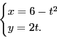
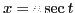

Next: References Up: Circle of curvature. Center Previous: Properties of the evolute Contents Index
Find the coordinates of the center of curvature and the equation of the evolute of each of the following curves. Draw the curve and its evolute, and draw at least one circle of curvature.
Ans. , ; evolute .
, ; evolute .
Ans. , .
Find the parametric equations of the evolutes of the
following curves in terms of the parameter  .
Draw the curve and its evolute, and draw at least one circle of curvature.
.
Draw the curve and its evolute, and draw at least one circle of curvature.
6. The hypocycloid
Ans. .
7. The curve
Ans.
8. The curve
 .
.
Ans. .
9. The curve .
Ans. .
10. The curve .
Ans. .
11. The curve
 .
.
Ans.
 .
.
12. The curve .
Ans. .
13. The curve .
Ans. .
14. The curve .
Ans. .
15. The curve .
Ans. .
16. The curve .
Ans .
17.
,  .
.
18.  ,
.
,
.
19.  ,
.
,
.
20.
,  .
.
21.  ,
.
,
.
22.  , .
, .
23. , .
24.
 ,
.
,
.
25. , .
26. , .
david joyner 2008-08-11